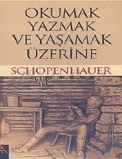

OYSchopenhauerning inson hayoti, kitoblar va tafakkur haqidagi mashhur falsafiy asari.
Arthur Schopenhauerning inson baxti, o'qish, yozish, kitoblar va tafakkur jarayoni haqidagi o'tkir faldasafiy mulohazalarini o'z ichiga olgan asari. Kitobda insoniyatning asosiy dushmanlari bo'lgan azob va zerikish tushunchalari hamda ularga qarshi kurashish yo'llari tahlil qilinadi.